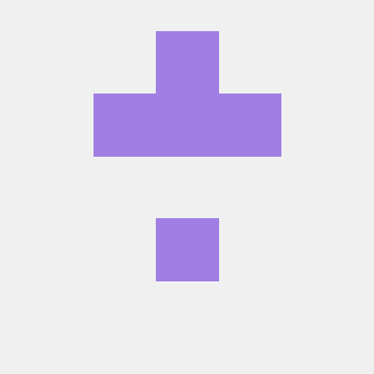
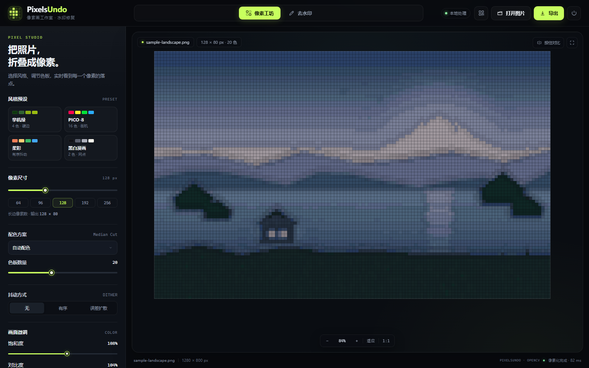
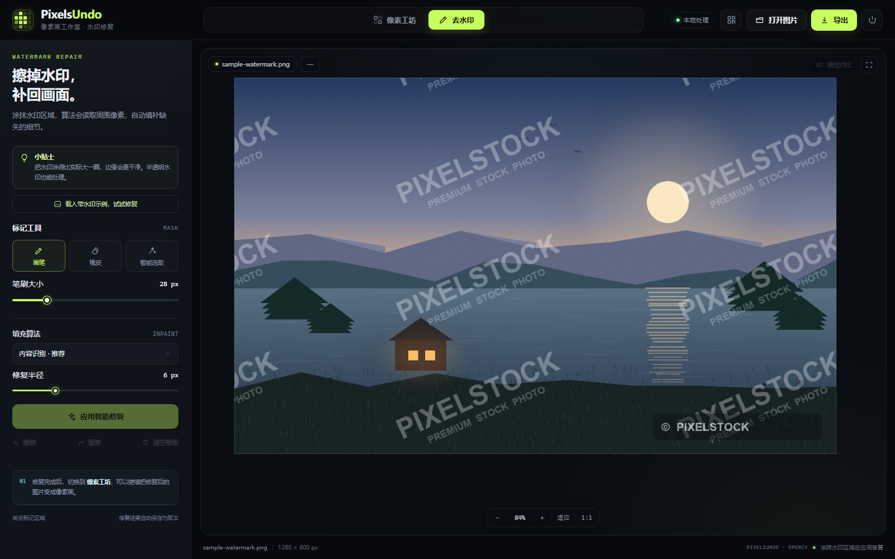

▦
像素画引擎
长边 16–512 像素，7 套配色、3 种抖动、描边强度，以及饱和度 / 对比度 / 亮度微调。右侧实时预览，导出 NEAREST 放大的清晰 PNG。
PixelsUndo 是一款本地像素画工作室：把普通照片变成有调色板、抖动和描边的像素画，再用画笔把水印擦回画面。手机连同一 Wi-Fi 扫码即可继续。


v1.1.0 · PIXEL + REPAIR像素化和去水印共用同一份原图，随时按“按住对比”查看差别。
长边 16–512 像素，7 套配色、3 种抖动、描边强度，以及饱和度 / 对比度 / 亮度微调。右侧实时预览，导出 NEAREST 放大的清晰 PNG。
输入黑场 / 白场、Gamma、输出黑场 / 白场五段控制；颜色数量 2–64 精确可选，4/8/12/16/24/32/48/64 一键切换，不再“看起来差不多”。
画笔、橡皮、智能选取三种蒙版工具，OpenCV Telea / Navier-Stokes 内容识别修复，支持撤销重做和按住查看修复前。
桌面端点“手机访问”出现二维码，同一 Wi-Fi 下扫码即可在手机上涂蒙版、调参数。横屏和竖屏都做了触控布局，双指缩放平移。
版本号就在状态栏，点一下检查 GitHub Release。发现新版本直接打开下载页，不用自己记版本。
没有账号、没有上传队列。图片只在本机内存和本地 data 目录里流转，退出程序即关闭局域网入口。
深色像素工作室，左侧调参数，中间看画面，底部看状态。

Windows 桌面版、局域网手机版，或部署到自己的云主机。
解压后双击 PixelsUndo.exe，浏览器会自动打开。首次启动会在程序旁生成 data 目录。
点顶栏二维码按钮，手机连同一个 Wi-Fi 扫码。首次使用先运行“允许手机访问.bat”放行防火墙。
iPhone Safari → 分享 → 添加到主屏幕；Android Chrome → 菜单 → 添加到主屏幕，获得全屏入口。
仓库内置 Dockerfile 与 render.yaml，在 Render 新建 Blueprint 即可获得 HTTPS 在线版；Railway 可用 railway.json 做镜像站。